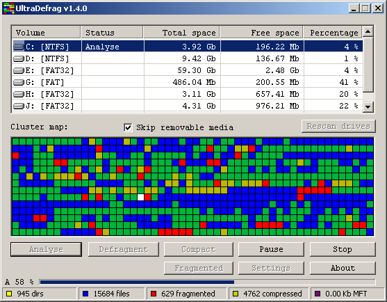

UltraDefrag
User Manual
What is UltraDefrag?
UltraDefrag is an open source disk defragmenter for Windows NT 4.0
and later operating systems. It makes use of the same defragmenting
API used by many other windows defrag utilities, both open and closed
source. However, UltraDefrag has two features that make it unique.
The first is that it has a kernel mode driver that does most of the
work. The second is the ability to run the application at boot up
time in a manner similar to chkdsk. This allows for faster
defragmentation time and the ability to defragment all files
including system files.
UltraDefrag supports the following filesystems FAT12/16/32, NTFS and on
Vista UDF. UDF is a file system intended for optical media such as DVDs that
unlike ISO9660, is rewriteable. It has also the ability to defragment volumes
at boot time allowing you to move many system files that are always locked by
the operating system. Currently all files besides the registry hives and
the pagefile can be scanned at boot time. UltraDefrag can also
defragment files and folders compressed by NTFS file system
compression. And can even defragment floppies, although doing so is
not particularly useful.
UltraDefrag binaries are available for the 32 bit and all 64 bit
versions of Windows.
Installing UltraDefrag
You can download the latest installer for UltraDefrag at the
project homepage
(http://ultradefrag.sourceforge.net/).
Simply download and run the installer. No reboot is required.
SOFTWARE REQUIREMENTS:
- Minimal
- Windows NT 4.0 or later operating system.
- Text editor with Unicode (UTF-16) support.
- Advanced
- Web browser (at least IE 3.0). With enabled JavaScript.
- DbgView program or DbgPrint Logger.
Note that you must be an administrator to install and run
UltraDefrag.
If you have problems with configuration files editing, use the following menu
in Explorer Tools > Folder options > File types
and associate 'lua' and 'cfg'
extensions with your preferred text editor.
Using UltraDefrag
IMPORTANT:
- You must disable your virus detection
software before using UltraDefrag.
- Directories on FAT volumes cannot be moved.
- Use the boot time defragmentation feature to defragment system files.
Console Application
The console application is called udefrag.exe. It
is placed in system32 directory by the installer. Therefore you can
call it from the command line or run box.
Command prompt
Microsoft Windows XP [5.1.2600]
(C) Microsoft Corporation, 1985-2001.
C:\>udefrag -a c:
UltraDefrag v1.4.1 console interface
Copyright (c) Dmitri Arkhangelski, 2007,2008.
Volume information:
Volume size = 3.92 Gb
Free space = 917.56 Mb
Total number of files = 14688
Number of fragmented files = 126
Fragments per file = 1.21
C:\>_
Console Application after a successful analyze run.
The command line version takes one of three switches and a
drive
letter. The switches are as follows:
- -? Displays the usage message
- -a Analyze the drive specified on the command line
- -o Optomize file space by moving all files to the begining of the drive
- -l List volumes available for defragmentation except removable
- -la List all volumes available for defragmentation
In addition the following switches can be used when defraging and compacting.
They override the settings in the udefrag.cfg file described below.
The default settings are set at compile time.
- -sN ignore files larger than N bytes
- -iA;B;C Include these files and directories from the scan (Maximum 4096 bytes)
- -eX;Y;Z Exclude these files and directories from the scan (Maximum 4096 bytes)
- -d[0-3] Set debug level: 0 Normal, 1 Detailed, 2 Paranoid
- -b Use default color scheme
Note that -i and -e parameters should be maximum 4096 characters long.
Specifying just the drive letter will cause UltraDefrag
to defragment the drive. When the operation finishes or you stop the
program with a Ctrl+C, the program will display the results to the
console. If you abort the operation with Ctrl+C or close the shell
window, UltraDefrag will exit safely without destroying any data.
The console application is also used as context menu handler. When you right click
drive/folder/file icon in Explorer you can select [--- Ultra Defragmenter --] item
to defragment selected file.
You can use the console application in batch files. Par example, you would like to
shutdown your system after defragmentation. Store the following code into one file with
.cmd extension and click it's icon to start batch processing:
@echo off
udefrag c: > c:\ud.log
udefrag d: >> c:\ud.log
shutdown -s -t 00
Batch files are powerful enough, try to insert commands to play sounds after
each defragmentation. If you doubt that your volumes are in good state then add
chkdsk command too.
To get list of available volumes type udefrag -l.
Each line of output contains volume letter, type of file system, total size and percent
of free space. Here is an example:
Command prompt
Microsoft Windows XP [5.1.2600]
(C) Microsoft Corporation, 1985-2001.
C:\>udefrag -l
UltraDefrag v1.4.0 console interface
Copyright (c) Dmitri Arkhangelski, 2007,2008.
Volumes available for defragmentation:
C: NTFS 3.92 Gb 6 %
D: NTFS 9.42 Gb 3 %
E: FAT32 59.30 Gb 5 %
C:\>_
Windows Application
The windows application is a simple application with one main
form of fixed size and an about box. An illustration of the window as well
as an explanation of their functionality is below:

-
List of volumes. This list all drives on the machine that you can scan.
CDROM's and other drives that cannot be defragmented are excluded from list automatically.
If the 'Skip removable media' box is checked, also floppies and other similar devices will
be excluded. This list has the following fields:
-
Volume - drive letter plus file system type in square brackets. There are used
two types of icons in this field:
 for fixed drives and
for fixed drives and
 for removable media.
for removable media.
-
Status - a description of the action
being performed (Analyze, defrag, etc).
-
Total space
-
Free space
-
Percentage - percent free.
-
Skip Removeable Media Checkbox
-
Cluster Map
This is a color coded representation of all drives.
Here is colors explaination:
Fragmented
Unfragmented
Free
Directory
Compressed
System
Temporary system
MFT
Some of the categories on the legend have a lighter and
darker color on them. The lighter colors represent files below the file
size threshold, and the darker colors represent files above the
threshold if one is set.
-
Rescan Drives
(Ctrl+R) This
button will recheck all volumes in the system to see if some were added
or removed.
-
Buttons
The following section explains the buttons along with listing their
shortcut keys.
-
Analyze (Ctrl+A)
Scans the currently selected drive to determine how fragmented it is.
-
Defrag (Ctrl+D)
Exactly what it says.
-
Compact
(Ctrl+C) Moves
all files to the beginning of the partition, defragmenting them if
possible. The compact command does not work on volumes with the FAT
filesystem because you cannot move directories on them.
-
Pause (Ctrl+P)
Stops the currently
running analyze or defrag operation. This behavior is the same as stop.
-
Stop (Ctrl+S)
Stops the currently
running analyze or defrag operation.
-
Fragmented
(Ctrl+F) Display
a report of all fragmented files on the system. This report is very
small but useful. It is generated by the driver, so all versions of
UltraDefrag generate it.
-
Settings (Ctrl+T) Displays the Settings Dialog. The settings dialog has
three buttons as shortcuts to main options,
report options and this User Manual.
The settings stored in files override the settings hardcoded into the executable
at compile time (in "src\dll\udefrag\settings.c").
-
About (F1) Displays the simple about box containing copyright notice
and links to most important information about program.
-
Progress bar
This displays the progress of the currently running analyze, compact or
defrag task. Note that selecting a different volume will cause this bar
to disappear.
Boot time scan
UltraDefrag also includes a new mode
that allows you to run it at boot time in a manner similar to chkdsk.
This is known as a native application.
Boot time settings may be specified in the gui. You may schedule a boot
time scan for the next reboot, or at every reboot. The only restriction on
boot time scans is that you may not scan encrypted volumes. This is because
lsass.exe, the component of the operating system that reads encrypted volumes,
is loaded after the native executable runs.
To change boot time options properly you should follow these instructions:
- Press 'Settings' button in GUI, then edit main options.
When you close the Settings dialog, boot time options will be set.
- As an alternative you can edit udefrag.cfg file
outside the GUI. Type in command prompt bt-on to enable
the boot time defragmantation feature and bt-off to disable
them.
The Report
Everytime you run analyze, compact or defragment, a report of
all files on the file system is created. This report has the
following fields.
-
Number of fragments.
-
Filename
-
Comment This can be blank or contain one of three values:
To change items sorting click top link on the preferred column. Note that it's a slow
process - about 1.5 seconds for 550 items on 1.8GHz CPU. Sorting implemented in JavaScript
is slow, but very reliable.
Scheduling Defrag runs.
The command line version of UltraDefrag may be run out of system
scheduled tasks. The process of adding a scheduled task instance of
UltraDefrag is simplified throuth a utility called UltraDefrag
Scheduler.NET. This small application requires Microsoft .NET Framework 2.0 to run. The simple gui has 4 settings.

- Whether to run Ultra Defrag every day (Daily) or only certain days of the week (Weekly).
- The time of day to run the task.
- The drive letter to scan.
- Days of the week to defrag if Weekly is selected.
Portable UltraDefrag
Portable package was made especially for people who wants to launch UltraDefrag from USB-flash without
an installation. If you have selected a portable app to be installed, the installer will write all needed files
into one directory on your hard drive. To get access to that directory use shortcut
Start -> Programs -> UltraDefrag -> Portable package.
Or find it manually in %windir%\UltraDefrag. Place all files contained there
on any removable media, p.a. on your USB-flash. Than you can run UltraDefrag on any compatible
computer without an installation. Here
is more information about portable applications.
There is one configuration file used by portable application. Here you can specify some options,
most useful is a language definition. The file has a PORTABLE.X name. The
complete example is here:
[Bootsplash]
Show=1
[i18n]
Language=Hungarian
Set Show=0 in the [Bootsplash] section to
disable bootsplash on startup.
Set Language=LanguageName to choose your preferred language to be used by
portable GUI. Available languages are: English, Hungarian, Russian.
UltraDefrag Micro Edition
The UltraDefrag Micro Edition is a special package for advanced users appreciating
extreme stability and power. This edition is much faster, much stable (it's driver contains just
most important parts). It has only console interface to speed up defragmentation process.
Boot-time feature is available too.
Note that console interface is very powerful, it has a full set of commands to perform any disk
defragmentation job.
Configuration files
Main options
They are stored in udefrag.cfg file located in
%windir%\UltraDefrag\options
directory. This is just a simple text file with comments and parameter-value pairs.
Note please that it must be saved in Unicode (UTF-16) encoding. On all supported systems
built-in Notepad can be used as editor.
The strings with a semicolon (;) or # characters in the beginning are comments.
Here is a complete example:
; !!! NOTE: THIS FILE MUST BE SAVED IN UNICODE (UTF-16) ENCODING !!!
;-------------------------------------------------------------------
;
; Filter
;
; 1. Enter multiple filter match strings separated
; by the semicolon (;) character. Note that filter
; is case insensitive.
; 2. You can specify maximum file size with the
; following suffixes: Kb, Mb, Gb, Tb, Eb, Pb.
; 3. The patterns you supply for the include and exclude
; functionality applies to the whole path. For example,
; if you specify 'temp' in the exclude path you would
; exclude both the temp folder (WINDIR\temp) and
; the internet explorer temporary files folder.
; Filter strings cannot be longer than 4096 bytes.
;
;-------------------------------------------------------------------
INCLUDE =
EXCLUDE = system volume information;temp;recycler
SIZELIMIT = 126 Pb
;-------------------------------------------------------------------
;
; Boot time settings
;
; 1. Enter multiple filter match strings separated
; by the semicolon (;) character. Note that filter
; is case insensitive.
; 2. The volume letters must be either separated
; by semicolons (;) or don't contain any separators
; between.
; 3. Set NEXT_BOOT/EVERY_BOOT to YES/NO
; to chose when to defragment.
;
;-------------------------------------------------------------------
BOOT_TIME_INCLUDE = windows;winnt;ntuser;pagefile;hiberfil
BOOT_TIME_EXCLUDE = temp
LETTERS = CLD
NEXT_BOOT = NO
EVERY_BOOT = YES
;-------------------------------------------------------------------
;
; Main report settings.
;
; 1. Set ENABLE_REPORTS parameter to YES/NO state
; to enable/disable HTML reports.
; 2. Set DBGPRINT_LEVEL = NORMAL to view useful
; messages about the analyse or defrag progress.
; Select DETAILED to create a bug report to send
; to the author when an error is encountered.
; Select PARANOID in extraordinary cases.
; Of course, you need have DbgView program or
; DbgPrint Logger installed to view logs.
;
;-------------------------------------------------------------------
ENABLE_REPORTS = YES
DBGPRINT_LEVEL = NORMAL
;-------------------------------------------------------------------
;
; Other settings
;
; Specify the map update interval in milliseconds.
;
;-------------------------------------------------------------------
MAP_UPDATE_INTERVAL = 500
The following options are obsolete: NEXT_BOOT. They does not take any
effect in the current version of the program.
Report options
They are stored in udreportopts.lua file located in
%windir%\UltraDefrag\options
directory. This is just a simple text file (in ANSI encoding) with comments and
parameter-value pairs. However it's a real program written in
Lua language.
The strings with -- character sequence in the beginning are comments. Here is
a complete example:
--------------------------------------------------------------------
-- Ultra Defragmenter report options
--------------------------------------------------------------------
--------------------------------------------------------------------
-- I. Output Formats
--------------------------------------------------------------------
produce_html = 1
--------------------------------------------------------------------
-- II. HTML specific options
--------------------------------------------------------------------
--------------------------------------------------------------------
-- Generally ASCII renders better in Internet Explorer and
-- UTF-16 renders better in FireFox. UTF-16 is of course required
-- to properly render Asian characters such as Japanese and Chinese.
--------------------------------------------------------------------
use_utf16 = 0
--------------------------------------------------------------------
-- Set enable_sorting to zero if your web browser is too old
-- and you have error messages about ivalid javascript code.
--------------------------------------------------------------------
enable_sorting = 1
--------------------------------------------------------------------
-- Set this parameter to 1 if you prefer to look at filenames
-- splitted into few short lines. If you prefer to use fullscreen
-- mode of your web browser then set this parameter to zero.
--------------------------------------------------------------------
split_long_names = 1
--------------------------------------------------------------------
-- Set here maximum number of characters per line
-- in filename cells.
--------------------------------------------------------------------
max_chars_per_line = 50
--------------------------------------------------------------------
-- This stylesheet is used to set styles for various
-- report elements.
--------------------------------------------------------------------
style = [[
<style>
td {font-family: monospace; font-size: 10pt}
.c {text-align: center}
.f {background-color: #000000; color: #FFFFFF}
</style>
]]
title_tags = {
open = "<pre><h3>",
close = "</h3></pre>"
}
--------------------------------------------------------------------
-- Main report table properties.
--------------------------------------------------------------------
table_style = [[
border="1" color="#FFAA55" cellspacing="0" width="100%"
]]
How it works
The actual work of moving files to different clusters is
performed
through the windows API. What makes UltraDefrag superior to the
standard windows defrag utility is that it uses its own algorithm to
determine where to place files. Also, the actual work is done by the
kernel driver ultradfg.sys. This enhances performance because there
is no constant switching between user mode and kernel mode.
Getting the Source
The latest sources for UltraDefrag is available via subversion.
The url is
https://ultradefrag.svn.sourceforge.net/svnroot/.
The program is written in C. The code is very clear and
understandable. Detailed compilation instructions are located in
INSTALL.TXT file in /src
subdirectory of the source code.
Reporting Bugs
Please report all problems and bugs via
the
sourceforge bug tracker.
NOTE: Please include the following data in
your bug report:
- If you see a 'Blue Screen Of Death' when running
UltraDefrag then include the important parts of the message.
- For gui releated bugs, please attach a screenshot
- If the bug is not gui related, please follow
these directions
to get the debuging information.
See Also